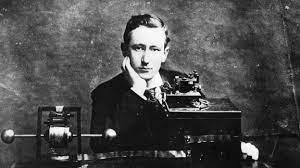
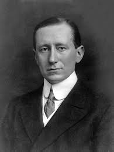

Biografia de Guillermo Marconi
Guillermo Marconi (en italiano: Guglielmo Marconi, Bolonia, 25 de abril de 1874 - Roma, 20 de julio de 1937) fue un ingeniero electrónico italiano, conocido como uno de los más destacados impulsores de la radiotransmisión a larga distancia, por el establecimiento de la Ley de Marconi, así como por el desarrollo de un sistema de telegrafía sin hilos (TSH) o radiotelegrafía. Es señalado a veces como el inventor de la radio, aunque realmente esta es una invención colectiva, y compartió en 1909 el Premio Nobel de Física junto a Carl Ferdinand Braun en reconocimiento a sus contribuciones en el desarrollo de la telegrafía inalámbrica.
Fue también uno de los inventores más reconocidos y, además del Premio Nobel, recibió la Medalla Franklin, fue presidente de la Accademia Nazionale dei Lincei y el rey Víctor Manuel III de Italia le nombró marqués, con lo que pasó a recibir el trato de «Ilustrísimo Señor». Además, está incluido en el Salón de la fama del museo de Telecomunicaciones y Difusión de Chicago, y en su honor la Asociación Nacional de Radiodifusión de los Estados Unidos entrega anualmente los premios NAB Marconi Radio Awards.
Segundo hijo de Giuseppe Marconi, terrateniente italiano, y su esposa de origen irlandés, Annie Jameson, estudió en la Universidad de Bolonia. Fue allí donde llevó a cabo los primeros experimentos acerca del empleo de ondas electromagnéticas para la comunicación telegráfica. En 1896, los resultados de estos experimentos se aplicaron en Gran Bretaña, entre Penarth y Weston, y en 1898 en el arsenal naval italiano de La Spezia. A petición del gobierno de Francia, en 1899 hizo una demostración práctica de sus descubrimientos, y estableció comunicaciones inalámbricas a través del canal de la Mancha, entre Dover y Wimereux. Atraído por la idea de transmitir ondas de radio a través de Atlántico, marchó a San Juan (Terranova), donde, el 12 de diciembre de 1901 recibió la letra «S» en Código Morse, transmitida por encargo suyo desde Poldhu (Cornualles) por uno de sus ayudantes, a través de 3360 km de océano. No obstante, la primera comunicación transatlántica completa no se hizo hasta 1907. Reginald Aubrey Fessenden ya había transmitido la voz humana con ondas de radio el 23 de diciembre de 1900.
En 1903, estableció en los Estados Unidos la estación WCC, para transmitir mensajes de este a oeste, en cuya inauguración cruzaron mensajes de salutación el presidente Theodore Roosevelt y el rey Eduardo VII del Reino Unido. En 1904, llegó a un acuerdo con la Oficina de Correos británica para la transmisión comercial de mensajes por radio. Ese mismo año, puso en marcha el primer periódico oceánico a bordo de los buques de la línea Cunard, que recibía las noticias por radio. Hacia 1908 creó una sucursal de su compañía en la localidad suburbana de Bernal, 17 km al sur de Buenos Aires, gerenciada por allegados. Desde allí logró comunicar con Canadá y Europa, realizando la primera telecomunicación inalámbrica sudamericana.
Su nombre se volvió mundialmente famoso a consecuencia del papel que tuvo la radio al salvar cientos de vidas con ocasión de los naufragios del Republic (1909) y del Titanic (1912).
El valor de la radio en la guerra se demostró por primera vez durante la guerra ítalo-turca de 1911. Con la entrada de Italia en la I Guerra Mundial en 1915, fue designado responsable de las comunicaciones inalámbricas para todas las fuerzas armadas, y visitó los Estados Unidos en 1917 como miembro de la delegación italiana.
Tras la guerra, pasó varios años trabajando en su yate, el Elettra, preparado como laboratorio, en experimentos relativos a la conducción de onda corta y probando la transmisión inalámbrica dirigida, que compartió con Carl Ferdinand Braun. Fue nombrado miembro vitalicio del Senado del Reino de Italia en 1918 y en 1929 recibió el título de marqués. Se cree que Nikola Tesla rechazó el premio Nobel porque decía precisamente que Marconi había tomado patentes suyas para hacer su invento, y que hasta que le retirasen el premio a Marconi él no lo aceptaría. Historia que es rechazada por la fundación Nobel, ya que no hay registro de cartas donde demuestre este hecho.
La Radio Vaticana fue fundada por Guillermo Marconi e inaugurada por Pío XI (con el mensaje radial Qui arcano Dei) el 12 de febrero de 1931